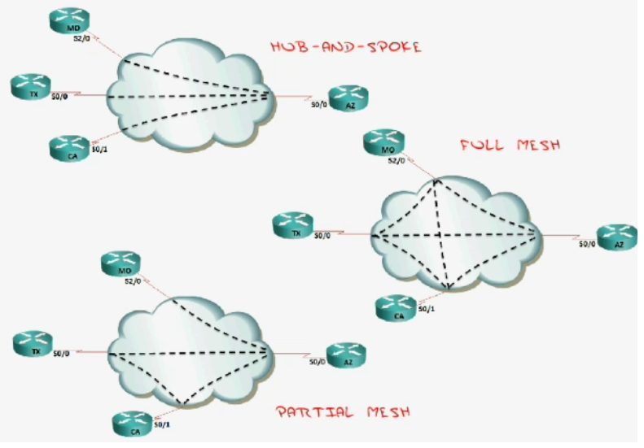

EIGRP
Concepts and Planning
Why You Would Choose to Use EIGRP
Backup routes (Fast convergence / DUAL)
Simple configuration
Flexibility in summarization
Unequal cost load-balancing
combines best of distance vector and link state
EIGRP Tables and Terminology
A router running EIGRP maintains three tables:
Neighbour table
Topology table (Successor routes, Feasible successor)
Routing table
A router running EIGRP has different terms:
Feasible Distance (FD)
Distance from you to reach a specific route
Advertised Distance (AD)
Distance from your neighbour to reach a specific route
Successor
Feasible Successor
Active Route (Bad - actively looking for a backup)
Passive Route (Good)
Note
To be considered a feasible successor, the AD must be less than the FD of the successor.
EIGRP Neighbour Relationships
Hello: forms relationship
Update: sends updates
Query: asks about routes
Reply: response to a query
Ack: acknowledges the update, query and reply messages
224.0.0.10
EIGRP Metric Calculation
Bandwidth (K1)
Delay (K3)
Reliability (K4 and K5)
Loading (K2)
MTU
Basic Configuration
_docs/eigrp-basic-configuration.zip
{kind=link}
BB Router
BB#conf t
BB(config)#int s1/0
BB(config-if)#ip add 10.1.24.1 255.255.255.252
BB(config-if)#band 256
BB(config-if)#no shut
BB(config-if)#int s1/1
BB(config-if)#ip add 10.1.34.1 255.255.255.252
BB(config-if)#band 128
BB(config-if)#no shut
BB(config-if)#int lo1
BB(config-if)#ip add 172.30.0.1 255.255.255.0
BB(config-if)#int lo2
BB(config-if)#ip add 172.30.1.1 255.255.255.0
BB(config-if)#int lo3
BB(config-if)#ip add 172.30.2.1 255.255.255.0
BB(config)#router eigrp 90
BB(config-router)#passive-interface default
BB(config-router)#no passive-interface s1/0
BB(config-router)#no passive-interface s1/1
BB(config-router)#variance 2
BB(config-router)#network 10.1.2.1 0.0.0.0
BB(config-router)#network 10.1.24.1 0.0.0.0
BB(config-router)#network 10.1.34.1 0.0.0.0
BB(config-router)#network 172.30.0.0 0.0.3.255
BB(config-router)#network 192.168.1.0 0.0.0.255
BB(config-router)#no auto-summary
BB(config)#ip route 192.168.1.0 255.255.255.0 null0
BB(config)#ip default-network 192.168.1.0
BB#wr
R2 Router
R2#conf t
R2(config)#int s1/0
R2(config-if)#ip add 10.1.24.2 255.255.255.252
R2(config-if)#band 256
R2(config-if)#no shut
R2(config-if)#int f0/0
R2(config-if)#ip add 10.1.2.2 255.255.255.0
R2(config-if)#no shut
R2(config-if)#int f0/1
R2(config-if)#ip add 10.1.25.2 255.255.255.0
R2(config-if)#no shut
R2(config-if)#router eigrp 90
R2(config-router)#passive-interface f0/1
R2(config-router)#network 10.1.2.2 0.0.0.0
R2(config-router)#network 10.1.24.2 0.0.0.0
R2(config-router)#no auto-summary
R2#wr
R3 Router
R3#conf t
R3(config)#int s1/0
R3(config-if)#ip add 10.1.34.2 255.255.255.252
R3(config-if)#band 128
R3(config-if)#no shut
R3(config-if)#int f0/0
R3(config-if)#ip add 10.1.2.3 255.255.255.0
R3(config-if)#no shut
R3(config-if)#router eigrp 90
R3(config-router)#network 10.1.2.3 0.0.0.0
R3(config-router)#network 10.1.34.2 0.0.0.0
R3(config-router)#no auto
R3#wr
Advanced Configuration
Frame Relay PVC Design
{kind=link}
Hub-and-Spoke
Inexpensive
If hub fails, WAN fails
Full Mesh
Expensive
Full redundancy
Good for VOIP
Seen in MPLS
Partial Mesh
Hybrid
Not so critical spokes have no redundancy
How EIGRP Handles NBMA (Non Broadcast Multi-Access)
EIGRP uses “Pseudo-Broadcasts” or manual neighbours (emulated broadcast)
Split Horizon can be an issue (“I will not tell somebody what they told me”)
Disabled on physical interfaces
Enabled on sub-interfaces
Configuration Example
_docs/eigrp-advanced-configuration.zip
{kind=link}
Best Practices and Design
Debugging EIGRP packets
Show communication of EIGRP packets:
debug eigrp packets
Query Swarm Resolutions
Summary routes
Stub configuration
Configuring Stubs
R1(config)#router eigrp1
R1(config-router)#eigrp stub
connected and summary by default, which is recommended (used 99% of time)
eigrp stub receive-only is the ultimate stub (similar to passive-interface)